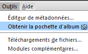
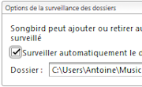
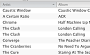
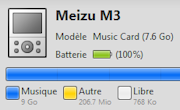
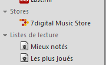

11 mars 2009
Sortie de Songbird 1.1 - Concours !
Songbird 1.1 est disponible en téléchargement !
Après une version 1.0 téléchargée par quasiment un million de personnes, Pioneers of the Inevitable sort la version 1.1 du lecteur multimédia web que l'on pourrait qualifier de iTunes-killer.Nouvelle fonctions

Pochette d'album à la demande Songbird peut maintenant télécharger la pochette des albums directement via le web. Faites simplement un clic-droit sur une chanson et choisissez "Récupérer les pochettes d'album". Vous pouvez aussi choisir la source des pochettes. Par défaut, Songbird ira télécharger la pochette à partir de Last.fm mais vous pouvez installer d'autres source comme amazon.com.
Dossier surveillé Vous pouvez choisir le dossier contenant votre musique et tout changements sera appliqué à votre librairie. Si vous supprimez un fichier de ce dossier, le morceau correspondant sera supprimé de votre librairie dans Songbird.
Meilleur Tri La librairie affiche maintenant les caractères unicode et effectue un meilleur tri des artistes avec les articles indéfinis "The" et "a". | | Support du Replay gain (normalisation du son) Si les méta données d'un morceau contiennent des informations relatives au replay gain (même spécifiques à iTunes), Songbird ajustera le son de la musique en conséquence. Moteur media amélioré & meilleur support de la lecture sans temps mort Le moteur de lecture à été réécrit afin d'améliorer les performances de lecture sur Windows (utilisation du processeur réduite). Si un encodeur mp3 place des informations indiquant le début exact et la fin du morceau dans les méta données, Songbird sera capable de les interpréter pour sauter les données qui ne contiennent pas de son afin de ne pas avoir de temps mort entre 2 morceaux.
Support des baladeurs MTP Beaucoup de bugs ont été corrigés concernant les baladeurs MTP sur Windows. Il est aussi maintenant possible de synchroniser les fichiers Windows Media avec signatures DRM sur votre baladeur MTP. Pour vérifier si votre baladeur est compatible, ou pour rapporter un problème, jetez un oeil à la page baladeurs MTP (anglais).
Boutique 7digital MP3 (Beta) Vous pouvez désormais acheter des MP3s (jusqu'a 320kbps) légalement via la plateforme 7digital store dans Songbird. La boutique 7digital vérifie les derniers morceaux que vous avez écoutés dans Songbird pour vous proposer des albums recommandés. De plus, 7digital redistribue une partie de l'achat pour le développement de Songbird. Chaque morceau acheté permet de soutenir votre artiste préféré ainsi que le développement du logiciel.Améliorations des performances
Le logiciel est encore plus stable et plus rapide :- Réduction de l'utilisation de la mémoire de 40% avec une grande bibliothèque
- Utilisation du processeur divisée par 2 durant la lecture
- Correction des fuites de mémoire pendant la lecture
- Mémoire cache de la librairie ajustable
- Réduction de l'utilisation de la mémoire de 60 % lors de l'importation de musique
- Taille du fichier d'installation Mac réduit de 45%
- Moins de crashs
Commentaires 22